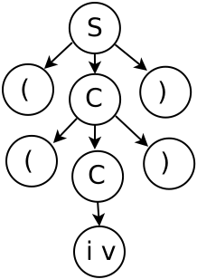
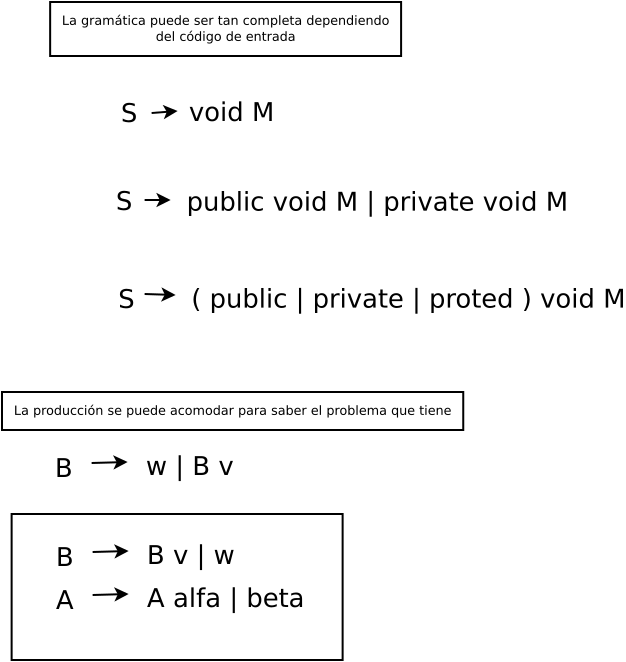
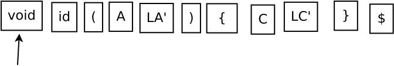
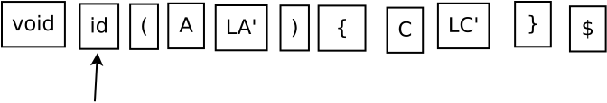

Problemas y acondicionamiento de las gramáticas libres de contexto para su análisis por descenso recursivo
Problemas con las gramáticas libres de contexto. Para construir el analizador sintáctico de descenso recursivo, conviene que la gramática sea LL(1). Ya que algunas de las gramáticas libres de contexto (GLC) tienen problemas, como:
| Número | Problema |
|---|---|
| 1 | Recursión o recursividad izquierda. |
| 2 | Ambigüedad. |
| 3 | Retroceso (backtracking). |
Y aunque la mayorı́a de las gramáticas libres de contexto pueden ser analizadas sin retroceso. Es necesario comprobar que la GLC sea LL(1). Para saber que una GLC es LL(1) debe cumplir con los siguientes puntos:
- Primero
- Regla UNO. Si las producciones tienen la forma A → σ1 |σ2 |σ3 deben cumplir con la condición PRIMERO(σ1 ) ∩ PRIMERO(σ2 ) ∩ PRIMERO(σ3 ) = ∅.
- Segundo
- Regla DOS. Si las producciones tienen la forma X → σ|ε deben cumplir con la condición PRIMERO(X) ∩ SIGUIENTE(X) = ∅.
Cálculo de primeros
Lo que hace el analizador sintáctico, es determinar si la cadena de tokens que ha entregado el analizador léxico estan colocados en el lugar adecuado. Esto lo hace comparando la cadena de tokens con la GLC que se ha definido.
Por lo que es necesario saber cuál es el primer símbolo de una cadena y también reconocer el siguiente símbolo de una cadena.
Definición de PRIMERO. Para un símbolo gramatical α, PRIMERO(α) es el conjunto de terminales que pueden aparecer al inicio de una oración derivada de α.
Para determinar el conjunto PRIMERO(α), se puede aplicar la intuición y aunque esta es clara, es necesario formalizar el proceso de obtención del conjunto PRIMERO(α), para lo cual se requiere cierta notación. Para cada símbolo gramatical α, se define el conjunto PRIMERO(α) como el conjunto de símbolos terminales que pueden aparecer como la primera palabra en alguna cadena derivada de α. El dominio de primero es el conjunto de símbolos gramaticales, T ∪ N ∪ {ε, eof} y su rango es T ∪ {ε, eof}. Si α es terminal, ε o eof, entonces PRIMERO(α) tiene exactamente un miembro, α. Para un no terminal A, PRIMERO(A) contiene el conjunto completo de símbolos terminales que pueden aparecer como primer símbolo en forma de oración derivado de A.
Definimos los conjuntos PRIMERO sobre símbolos gramaticales únicos. Es conveniente extender esa definición a cadenas de símbolos. Para una cadena de símbolos, S1 = β1 β2 β3. . . βk, definimos PRIMERO(s) como la unión de los conjuntos PRIMERO para β1, β2,. . . , βn, donde βn es el primer símbolo cuyo primer conjunto no contiene ε, y ε ∈ PRIMERO(s) si y solo si está en el conjunto para cada uno de los βi, 1 ≤ i ≤ k.
S1 = β1 β2 β3 . . . βk
El cálculo del conjunto PRIMERO se lo aplicamos a la sguiente gramática:
S → aCa,
C → aCa | b
Usando el procedimiento, hacemos la siguiente consideración:
S → β1 β2 β3
Por lo que se aplica al símbolo inicial, como sigue:
PRIMERO(S) = PRIMERO(β1 β2 β3) = {β1}
Como:
β1 = a
Y ya que:
ε ∉ {β1}
Se tiene que:
PRIMERO(S) = {β1} = {a}
Ejemplo de cálculo de siguientes
Se tiene el siguiente bloque de código:
void suma(int i, int j) { int t; t = i + j; }
Se aplica la siguiente gramática obtenida del mismo código:
S → void M ,
M → id (LA) {LC} ,
LA → LA, A | A ,
A → int id | ε ,
LC → LC C | C ,
C → int id; | id = id + id;
Se obtienen las derivaciones, de la siguiente manera:
S ⇒ void M ⇒ void id (LA) {LC} ⇒
void id (LA , A) {LC} ⇒ void id (A , A) {LC}
⇒ void id (int id , A) {LC} ⇒
void id (int id , int id) {LC} ⇒
void id (int id , int id) {LC C} ⇒
void id (int id , int id) {C C} ⇒
void id (int id , int id) {int id; C} ⇒
void id (int id , int id) {int id; id = id + id;}
Cálculo de los PRIMEROS:
PRIMERO(S) = {void}
PRIMERO(M) = {id}
PRIMERO(LA) = PRIMERO(LA)
PRIMERO(A) = {int}
PRIMERO(C) = {int, id}
PRIMERO(LA) = {,}
PRIMERO(LC) = {int, id}
PRIMERO(LA') = {int, id}
PRIMERO(LC') = {int, id}
| S | M | A | C | LA | LC | LA' | LC' | |
|---|---|---|---|---|---|---|---|---|
| PRIMEROS | void | id | int | int, id | int | int, id | , | int, id |
| SIGUIENTES | $ | $ | ), , | }, PRIMERO(C) | int, id | } | ) | } |
SIGUIENTE(S) = {$}
SIGUIENTE(M) = {$}
SIGUIENTE(A) = {), ,}
SIGUIENTE(C) = {}, PRIMERO(C)}
SIGUIENTE(LV) = {,}
SIGUIENTE(LC) = {$}
SIGUIENTE(LV') = {$}
SIGUIENTE(LC') = {$}
La forma general de la recursividad izquierda:
A → A α | β
| Transformación | Producción | Igualdades | Resultado |
|---|---|---|---|
| A → β A' A' → α A' | ε | LA → LA, A | A | A = LA, A' = LA', α = ,A , β = A | LA → A LA' , LA' → ,A LA' | ε |
| A → β A' A' → α A' | ε | LC → LC C | C | A = LC, A' = LC', α = C , β = C | LC → C LC' , LC' → C LC' | ε |
La gramatica queda de la siguiente forma:
S → void M ,
M → id (LA) {LC} ,
LA → A LA' ,
LA' → ,A LA' | ε ,
A → int id | ε ,
LC → C LC' ,
LC' → C LC' | ε ,
C → int id; | id = id + id;
La gramática anterior cumple con la regla dos para las producciones 4, 5 y 7. Debido a esto la la gramática es LL(1).
Cálculo de siguientes
Definición de SIGUIENTE. Para un α no terminal, SIGUIENTE(α) contiene el conjunto de palabras que pueden aparecer inmediatamente después de α en una frase.
Se toma la misma gramática para conocer el conjunto SIGUIENTE de todos los no terminales:
G(N, T, S, P)
Ahora se requiere que una cadena de tokens sea colocada en el proceso de derivación. Por lo que la siguiente cadena de tokens, se requiere emparejar con las derivaciones adecuadas. Sea la cadena ((i v)) que se debe reconocer:
S → (C),
C → (C) | i v
Por lo que el inicio de las derivaciones es el uso del símbolo S, como se presenta a continuación:
S ⇒ (C) ⇒ ((C)) ⇒ ((i v))
El siguiente de los no terminales S y C, se calcula usando las producciones de la gramática, como sigue:
SIGUIENTE(S) = {$}
SIGUIENTE(C) = {)}

Ejemplo de construcción del analizador de descenso recursivo
Comprobar si la gramática es LL(1). Por lo que se aplican las reglas UNO y DOS a la gramática siguiente:
T → R | aTc,
R → bR | ε
Proceso de construcción. Después de haber acondicionado a la gramática. Se procede a convertir cada una de las producciones en funciones, como se muestra con el siguiente ejemplo:
Por lo que la gramática se escribe aumentandola de la siguiente forma:
T' → T,
T → R | aTc,
R → bR | ε
Se obtienen los primeros y siguientes que se muestran en la siguiente tabla:
| T' | T | R | |
|---|---|---|---|
| PRIMEROS | a, b | a, b | b, ε |
| SIGUIENTES | $ | $, c | $, c |
Por lo que las funciones se obtienen de la siguiente forma:
T' $ ⇒ T $
Para la primera producción se obtiene PRO T'():
PRO T'() {
Token ← SigTok();
if Token == PRIMERO(T’) then
PRO T();
if Token == eof then
EsEnPan(SentenciaAceptada);
else
EsEnPan(Error);
else
EsEnPan(Error);
}
Para la segunda producción se obtiene PRO T():
PRO T() {
if Token == b then
PRO R();
else if Token == a then
Token := SigTok(a);
PRO T() ;
Token := SigTok(c) ;
else
EsEnPan(Error);
}
Para la tercera producción se obtiene PRO R():
PRO R() {
if Token == b then
Token := SigTok(b);
PRO R() ;
else if Palabra == SIGUIENTE(R) then
RETURN() ;
else
EsEnPan(Error);
}
Comprobación por medio de la entrada de una cadena
Se comprueba el analizador por medio de la entrada de la cadena abbc. Se muestra en la siguiente tabla.
T' ⇒ T ⇒ aTc ⇒ aRc ⇒ abRc ⇒ abbRc ⇒ abbc
| ENTRADA | PROCEDIMIENTOS | |||
|---|---|---|---|---|
| ↑ abbc$ | pal(a) | PRO T’() | ||
| a↑bbc$ | PRO T’(a) | |||
| a↑bbc$ | PRO T(a) | Acep | ||
| a↑bbc$ | Pal(a) | PRO T() | Pal(c) | Acep |
| ab↑bc$ | PRO T(b) | Pal(c) | Acep | |
| ab↑bc$ | PRO R(b) | Pal(c) | Acep | |
| ab↑bc$ | Pal(b) | PRO R() | pal(c) | Acep |
| abb↑c$ | PRO R(b) | Pal(c) | Acep | |
| abb↑c$ | Pal(b) | PRO R() | Pal(c) | Acep |
| abb↑c$ | PRO R(c) | Pal(c) | Acep | |
| abb↑c$ | PRO R(c) | Acep | ||
| abbc↑$ | Acep |
Procedimiento de construcción del analizador sintáctico descendente
Se da el siguiente código de entrada:
void suma(int i, int j) { int t; t = i + j; }
Se obtiene la gramática del código anterior:
S →void M
S → void suma(LA){LC}
S → void id(LA){LC}
LA → LA, A | A
A → int id
LC → LC C | C
C → int id; | id = id + id;
Obtenida la gramática. Se comprobará, si es LL(1):
Primero. Se aplican las reglas UNO y DOS a las producciones del tipo alternativa.
Si no se cumple con las reglas UNO y DOS. Se debe acondicionar la gramática hasta convertirla en gramática LL(1). Y se aplica el el punto Segundo.
En caso de cumplir con las reglas UNO y DOS, se pasa al punto Tercero.
Segundo. Si existen problemas en la gramática, se deben corregir. Por lo que en la tabla siguiente se presenta la gramática ya corregida.
LA → LA, A | A
LC → LC C | C
| ORDEN | PRODUCCIÓN |
|---|---|
| 1 | S → void M |
| 2 | M → id (LA) {LC} |
| 3 | LA → A LA' |
| 4 | LA' → ,A LA' | ε |
| 5 | A → int id | ε |
| 6 | LC → C LC' |
| 7 | LC' → C LC' | ε |
| 8 | C → int id; | id = id + id; |
Tercero. Aumentar la gramática LL(1).

| ORDEN | PRODUCCIÓN |
|---|---|
| 0 | S' → S |
| 1 | S → void M |
| 2 | M → id (LA) {LC} |
| 3 | LA → A LA' |
| 4 | LA' → ,A LA' | ε |
| 5 | A → int id | ε |
| 6 | LC → C LC' |
| 7 | LC' → C LC' | ε |
| 8 | C → int id; | id = id + id; |
Cuarto. Construir las funciones para cada uno de los símbolos no terminales.
Utilizando la tabla de PRIMEROS y SIGUIENTES.
| S' | S | M | A | C | LA | LC | LA' | LC' | |
|---|---|---|---|---|---|---|---|---|---|
| PRIMEROS | void | void | id | int | int, id | int, , | int, id | , | , |
| SIGUIENTES | $ | $ | $ | ), , | }, , | ) | } | ) | } |
S' $ ⇒ S $
S $ ⇒ void M $
void M $ ⇒ void id (LA) {LC} $
void id (LA) {LC} $ ⇒ void id (A LA') {C LC'} $
Se construyen las funciones:
Para S'():

PRO S'() {
Token ← SigTok();
if Token == PRIMERO(S’) then
PRO S();
if Token == $ then
EsEnPan(SentenciaAceptada);
else
EsEnPan(Error);
else
EsEnPan(Error);
}
Para S():

PRO S() {
Token ← SigTok();
if Token == PRIMERO(S) then
Token := SigTok(void);
PRO M();
else
EsEnPan(Error);
}
Para M():
PRO M() {
Token ← SigTok();
if Token == PRIMERO(M) then
Token := SigTok(id);
Token := SigTok(();
PRO LA();
Token := SigTok());
Token := SigTok({);
PRO LC ();
Token := SigTok(});
else
EsEnPan(Error);
}
Para LA():
PRO LA() {
Token ← SigTok();
if Token == PRIMERO(LA) then
PRO A ();
PRO LA' ();
else
EsEnPan(Error);
}
Para LA'():
PRO LA'() {
Token ← SigTok();
if (Token == PRIMERO(LA')) then
Token := SigTok(,);
PRO A ();
PRO LA' ();
else if(Token == SIGUIENTE(LA')) then
RETURN();
else
EsEnPan(Error);
}
Para A():
PRO A() {
Token ← SigTok();
if (Token == PRIMERO(LA')) then
Token := SigTok(int);
Token := SigTok(id);
else if(Token == SIGUIENTE(A)) then
RETURN();
else
EsEnPan(Error);
}
Para LC():
PRO LC() {
Token ← SigTok();
if Token == PRIMERO(LC) then
PRO C();
PRO LC'();
else
EsEnPan(Error);
}
Para LC'():
PRO LC'() {
Token ← SigTok();
if (Token == PRIMERO(LC')) then
PRO C();
PRO LC'();
else if (Token == SIGUIENTE(LC')) then
RETURN();
else
EsEnPan(Error);
}
Para C():
PRO C() {
Token ← SigTok();
if (Token == int) then
Token := SigTok(int);
Token := SigTok(id);
Token := SigTok(;);
else if (Token == id) then
Token := SigTok(id);
Token := SigTok(=);
Token := SigTok(id);
Token := SigTok(+);
Token := SigTok(id);
Token := SigTok(;);
else
EsEnPan(Error);
}
Se analiza la secuencia de tokens que representan la declaración de un método:
void suma(int i, int j) { int t; t = i + j; }
| ENTRADA | PROCEDIMIENTO |
|---|---|
| ↑ void suma(int i, int j) { int t; t = i + j; }$ | PRO S’() |
| ↑void suma(int i, int j) { int t; t = i + j; }$ | pal(void),PRO S(void) Acep |
| ↑void suma(int i, int j) { int t; t = i + j; }$ | pal(void) PRO M(), Acep |
| void ↑suma(int i, int j) { int t; t = i + j; }$ | PRO M(suma), Acep |
| void ↑suma(int i, int j) { int t; t = i + j; }$ | pal(suma), pal((), PRO LA(), pal()), pal({), PRO LC(), pal(}), Acep |
| void suma↑(int i, int j) { int t; t = i + j; }$ | pal((), PRO LA(), pal()), pal({), PRO LC(), pal(}), Acep |
| void suma(↑int i, int j) { int t; t = i + j; }$ | PRO LA(int), pal()), pal({), PRO LC(), pal(}), Acep |
| void suma(↑int i, int j) { int t; t = i + j; }$ | PRO A(int), PRO LA'(), Pal(c), Acep |
| void suma(↑int i, int j) { int t; t = i + j; }$ | pal(int), pal(id), PRO LA'(), pal()), pal({), PRO LC(), pal(}), Acep |
| void suma(int ↑i, int j) { int t; t = i + j; }$ | pal(id), PRO LA'(), pal()), pal({), PRO LC(), pal(}), Acep |
| void suma(int i↑, int j) { int t; t = i + j; }$ | PRO LA'(,), pal()), pal({), PRO LC(), pal(}), Acep |
| void ↑suma(int i↑, int j) { int t; t = i + j; }$ | pal(,), PRO A(), PRO LA'(), pal()), pal({), PRO LC(), pal(}), Acep |
| void suma(int i, ↑int j) { int t; t = i + j; }$ | PRO A(int), PRO LA'(), pal()), pal({), PRO LC(), pal(}), Acep |
| void suma(int i, ↑int j) { int t; t = i + j; }$ | pal(int), pal(id), PRO LA'(), pal()), pal({), PRO LC(), pal(}), Acep |
| void suma(int i, int ↑j) { int t; t = i + j; }$ | pal(id), PRO LA'(), pal()), pal({), PRO LC(), pal(}), Acep |
| void suma(int i, int j↑) { int t; t = i + j; }$ | PRO LA'()), pal()), pal({), PRO LC(), pal(}), Acep |
| void suma(int i, int j↑) { int t; t = i + j; }$ | pal()), pal({), PRO LC(), pal(}), Acep |
| void suma(int i, int j↑) { int t; t = i + j; }$ | pal()), pal({), PRO LC(), pal(}), Acep |
| void suma(int i, int j) ↑{ int t; t = i + j; }$ | pal({), PRO LC(), pal(}), Acep |
| void suma(int i, int j) { ↑int t; t = i + j; }$ | PRO LC(int), pal(}), Acep |
| void suma(int i, int j) { ↑int t; t = i + j; }$ | PRO C(int), PRO LC'(), pal(}), Acep |
| void suma(int i, int j) { ↑int t; t = i + j; }$ | pal(int), pal(id), pal(;), PRO LC'(), pal(}), Acep |
| void suma(int i, int j) { int ↑t; t = i + j; }$ | pal(id), pal(;), PRO LC'(), pal(}), Acep |
| void suma(int i, int j) { int t; ↑t = i + j; }$ | PRO LC'(id), pal(}), Acep |
| void suma(int i, int j) { int t; ↑t = i + j; }$ | PRO C(id), PRO LC'(), pal(}), Acep |
| void suma(int i, int j) { int t; ↑t = i + j; }$ | pal(id), pal(=), pal(id), pal(+), pal(id), pal(;), PRO LC'(), pal(}), Acep |
| void suma(int i, int j) { int t; t ↑= i + j; }$ | pal(=), pal(id), pal(+), pal(id), pal(;), PRO LC'(), pal(}), Acep |
| void suma(int i, int j) { int t; t = ↑i + j; }$ | pal(id), pal(+), pal(id), pal(;), PRO LC'(), pal(}), Acep |
| void suma(int i, int j) { int t; t = i ↑+ j; }$ | pal(+), pal(id), pal(;), PRO LC'(), pal(}), Acep |
| void suma(int i, int j) { int t; t = i + ↑j; }$ | pal(id), pal(;), PRO LC'(), pal(}), Acep |
| void suma(int i, int j) { int t; t = i + j↑; }$ | pal(;), PRO LC'(), pal(}), Acep |
| void suma(int i, int j) { int t; t = i + j; ↑}$ | PRO LC'(), pal(}), Acep |
| void suma(int i, int j) { int t; t = i + j; ↑}$ | PRO LC'(), pal(}), Acep |
| void suma(int i, int j) { int t; t = i + j; ↑}$ | pal(}), Acep |
| void suma(int i, int j) { int t; t = i + j; }↑$ | Acep |